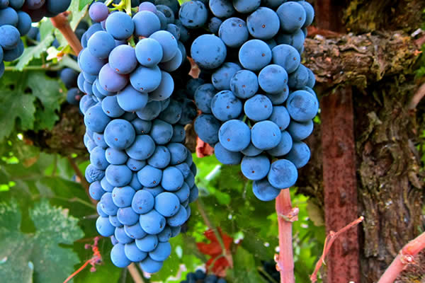
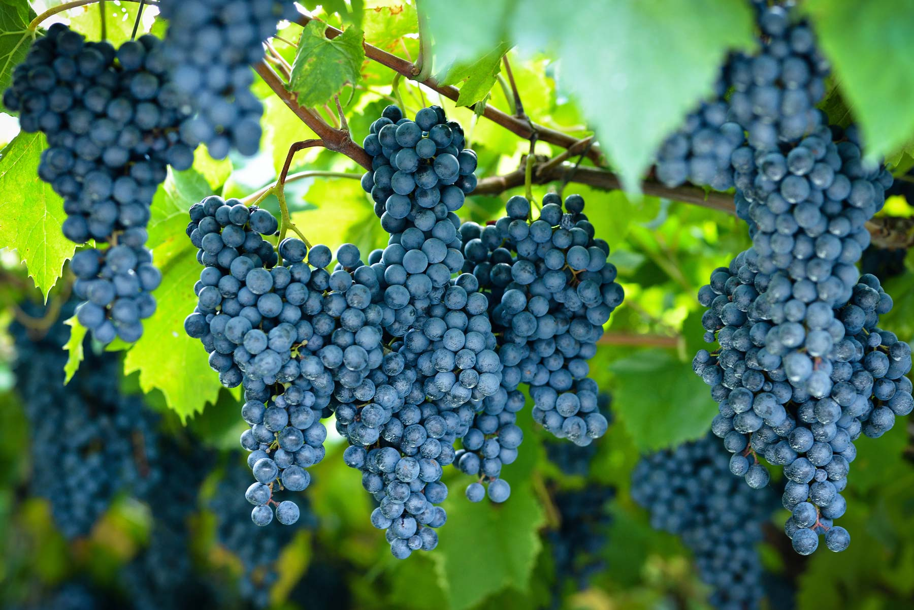
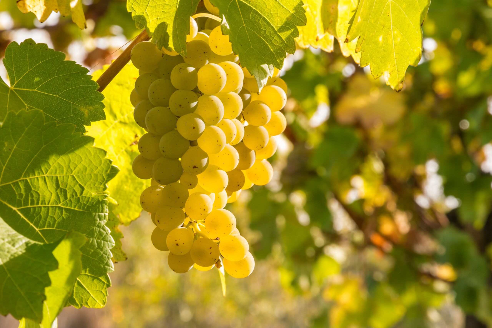
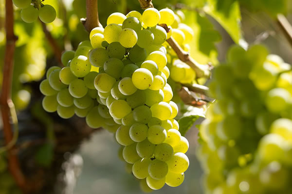
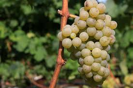

Todo tipo de productos
En BAKOS celebramos la esencia del vino: tradición, pasión y elegancia en cada
copa.
Aquí encontrarás un recorrido completo desde el material con el que se hace el vino hasta los
distintos tipos de vino
Distingue como cada uva puede contar una historia, y cada sorbo puede transportar tus
sentidos a viñedos lejanos y soleados.
Clases de uvas
Existen más de 1.300 variedades de uva cultivadas para vinificación en el mundo.
Estas se
dividen principalmente en dos categorías:
Uvas tintas: Se utilizan para elaborar vinos tintos y rosados. Algunas de las más conocidas incluyen:
🍇 Cabernet Sauvignon
Originaria de Burdeos, Francia, es una de las variedades más plantadas y apreciadas a nivel
mundial
Los vinos originarios del Cabernet Sauvignon suelen ser secos, con alta
concentración de taninos (que dan estructura y sensación en boca),con aromas a frutos rojos.

🍇 Merlot
También originaria de Burdeos, es conocida por su suavidad y sabor afrutado dado por sus bajos niveles de taninos. Tiene acidez moderada y un tremendo carácter frutal. De final sedoso, sus sabores y aromas pueden variar entre frutos negros, chocolate y algo de especias, hasta notas a grafito, ciruelas, guindas, hierbas y violetas.
🍇 Syrah
Procedente del Valle del Ródano, Francia, ofrece vinos con sabores especiados y afrutados.Las propiedades de este varietal dependen mucho del lugar donde se cultive, y del clima. Por ejemplo, en España hay algunos vinos de Syrah que tiene una potencia y untuosidad extraordinarias, que los diferencian mucho de los vinos de Syrah franceses, más ácidos y suaves. Hay bodegas de Castilla la Mancha que se han especializado en su elaboración. En el nuevo mundo, la Syrah también produce vinos muy interesantes, en particular es famosa por su producción Australia.
Uvas blancas: Se utilizan para elaborar vinos blancos y espumosos. Algunas variedades destacadas son:
🍇 Chardonnay
Originaria de Borgoña, Francia, es versátil y se adapta a diferentes estilos de vino que se adapta a diversos climas y suelos, produciendo vinos con aromas que varían de cítricos y manzana en climas fríos a tropicales en climas cálidos. Es muy versátil, permitiendo la crianza en barrica para desarrollar notas de mantequilla, miel y nueces, y es fundamental en Borgoña para vinos espumosos como el Champagne.
🍇 Sauvignon Blanc
Conocida por sus aromas herbáceos y cítricos, es popular en regiones como Nueva Zelanda. Un vino blanco popular e inconfundible, apreciado por sus sabores herbales "verdes" y su acidez vivaz. El Sauvignon Blanc crece en casi todas partes y, por lo tanto, ofrece una variedad de estilos, desde ligeros hasta generosos.
🍇 Riesling
Variedad alemana que produce vinos aromáticos y de alta acidez.La variedad riesling es un cruce entre la heunisch (o gouais blanc) y otra uva que por el momento se desconoce. Sus bayas son redondas, de color amarillo verdoso y tamaño moderado. Es un uva que requiere temperaturas frescas, buen drenaje y zonas soleadas. Debe madurar lentamente y cultivarse buscando rendimientos moderados. En climas cálidos madura con demasiada prontitud, dejándose buena parte de su encanto por el camino
Tipos de vino
El vino se clasifica en varios tipos según su color, sabor, método de producción y nivel de dulzura. Aquí te presentamos los tipos más comunes:
🍷 Vino Tinto
El vino tinto se elabora a partir de uvas tintas y obtiene su color característico de las pieles de las uvas durante la fermentación. Los vinos tintos pueden variar desde ligeros y afrutados hasta robustos y tánicos, dependiendo de la variedad de uva y el proceso de envejecimiento.
🍾 Vino Espumoso
El vino espumoso, como el Champagne, se caracteriza por sus burbujas. Se produce mediante una segunda fermentación que atrapa dióxido de carbono en la botella. Los vinos espumosos pueden ser secos o dulces y son populares en celebraciones.
🍇 Vino Rosado
El vino rosado se elabora a partir de uvas tintas, pero con un tiempo de contacto limitado con las pieles, lo que le da su color rosado. Los vinos rosados pueden ser secos o dulces y suelen tener sabores frutales y florales.
🍸 Vino Blanco
El vino blanco se produce principalmente a partir de uvas blancas, aunque también puede hacerse con uvas tintas sin las pieles. Los vinos blancos varían desde secos y crujientes hasta dulces y aromáticos, con sabores que van desde cítricos hasta tropicales.
Maridaje de vinos
El maridaje de vinos es el arte de combinar diferentes tipos de vino con alimentos específicos para realzar los sabores de ambos. Aquí te ofrecemos algunas pautas generales para maridar vinos:
Vino Tinto: Combina bien con carnes rojas, platos ricos en proteínas y quesos fuertes.
Vino Blanco: Ideal para maridar con pescados, mariscos, ensaladas y platos ligeros.
Vino Rosado: Versátil y puede acompañar una variedad de platos, desde carnes blancas hasta ensaladas y platos picantes.
Vino Espumoso: Perfecto para aperitivos, mariscos y postres ligeros.
Recuerda que el maridaje es subjetivo y lo más importante es disfrutar de la combinación que más te guste.
Descubre más
En BAKOS te invitamos a recorrer cada rincón del vino: su origen, sus variedades y el viaje que realiza hasta tu mesa.
“El vino es la única obra de arte que se puede beber.”
Luis Fernando Olaverri